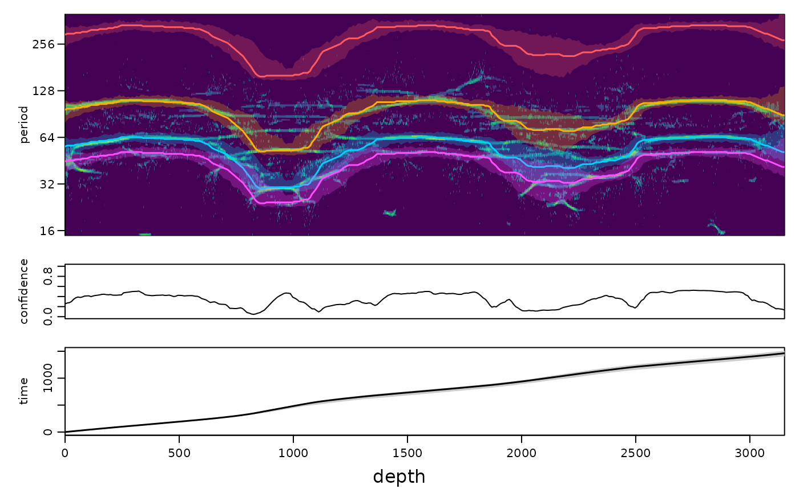

Astronomically constrained continuous tracking of the sedimentation rate in a scalogram
Source:R/track_hmm.R
track_astro_hmm.RdTracks the sedimentation rate (and with it the periods of all astronomical cycles) continuously through a
scalogram, using all cycles at once. At every position the hidden state is the sedimentation rate s; the evidence
for a value of s is the (normalised, smoothed) power of the scalogram at the depth periods P_k * s of all
astronomical cycles P_k together (e.g. eccentricity, obliquity and precession). Where one cycle is weak (a node
of the eccentricity modulation of precession, a gap in a synchrosqueezed ridge) the others keep the track on course,
and the fixed ratios between the periods prevent the confusion of one cycle with another (e.g. an obliquity ridge read
as precession) that single ridge tracking suffers from. The sedimentation rate follows a random walk with an optional
small probability of abrupt changes. The forward-backward algorithm gives a continuous most probable sedimentation rate
curve with a credible band, and paths sampled from the posterior give an age model with uncertainty.
Performance in synthetic tests (3000 kyr; eccentricity-modulated precession, obliquity and eccentricity; three jumps
of the sedimentation rate by factors 1.7, 0.5 and 1.6 plus gradual changes; AR1 noise; scalogram from
analyse_wavelet_sst(omega_nr = 12, n_iter = 4)): the largest age error was about 2 percent of the duration with
noise half as strong as the signal, 3-4 percent with equally strong noise and 6-9 percent with noise twice as strong
(always about half of the error of picking the strongest precession power in a band). With noise three times as strong
as the signal the track only succeeded with a rough guide (about 7 percent); without one it locked onto the wrong
cycles. The credible bands then also become too narrow: they describe the uncertainty given that the track follows the
right cycles, which the method cannot guarantee at such noise levels. Check weak intervals (low confidence) by
eye and with independent methods (e.g. ecoco_classic, amplitude modulation tests).
The astronomical periods must fit the age of the record: for deep time use precession and obliquity periods that
account for the recession of the Moon (e.g. from astro_terms, a k value from test_tuned or a
published solution).
Usage
track_astro_hmm(
wavelet,
astro_periods = c(405, 125, 95, 53.6, 41, 39.7, 23.7, 22.4, 19),
weights = NULL,
sedrate = NULL,
guide = NULL,
guide_tolerance = 0.25,
floor = 0.5,
whiten = FALSE,
background = c("none", "ar1"),
sd_change = 0.15,
jump_prob = 1e-04,
smooth_period = 0.02,
smooth_depth = NULL,
fallback = "cwt",
fallback_weight = 0.2,
sharpness = 0.5,
n_positions = 1500,
n_samples = 200,
level = 0.95,
jump_depths = NULL,
jump_prob_at = 0.05,
long_window = NULL,
long_weight = 0,
local_weight = 1,
guide_penalty = 50,
normalise = c("median", "column", "local", "loglog"),
local_octaves = 1,
consistent_cycles = "partial",
constraints = NULL,
smooth_path = c("none", "tv", "trend"),
smooth_lambda = 1,
age_ma = NULL,
k_yr = NULL,
seed = 1
)Arguments
- wavelet
Scalogram to track (list of class
analyze.wavelet), the output ofanalyse_wavelet,analyse_wavelet_sst,analyse_superlet_sstor a similar function, seetrack_ridge_hmm. Required, no default.- astro_periods
Periods of the astronomical cycles in time units (numeric vector, e.g. kyr), or a data frame with the columns
periodand (optionally)weightsuch as the output ofastro_periods_tracking. The default holds Cenozoic values (kyr). Listing all the main terms (including the weaker obliquity and precession terms) helps to tell the cycles apart. Replaced whenage_maork_yris given.Default=c(405, 125, 95, 53.6, 41, 39.7, 23.7, 22.4, 19).- weights
Weights of the cycles in the evidence (numeric vector, one value >= 0 per entry of
astro_periods), best proportional to their expected amplitude.NULLtakes theweightcolumn of a data frameastro_periods; otherwisec(0.5, 0.3, 0.3, 0.3, 1, 0.4, 1, 0.8, 0.6)for the default periods and 1 for all cycles for any other periods.Default=NULL.- sedrate
Range of the sedimentation rate in which the track is searched (numeric vector
c(lower, upper), > 0, in depth units per time unit ofastro_periods, e.g. m/kyr for a record in metres and periods in kyr).NULLuses the widest range at which at least one cycle falls inside the period range of the scalogram. Giving a realistic range is strongly recommended.Default=NULL.- guide
Optional rough sedimentation rate curve (two-column data frame or matrix: depth in column 1, sedimentation rate in column 2, same units as
sedrate), e.g. from a manual tracking divided by the period of the tracked cycle. It is interpolated to all positions (constant beyond its ends) and rates outsideguide * (1 +- guide_tolerance)are penalised byguide_penalty. In very noisy records this prevents the track from locking onto the wrong cycle.Default=NULL(no guide).- guide_tolerance
Relative half width of the band around
guide(numeric, > 0; e.g. 0.25 allows rates from 0.8 to 1.25 times the guide).Default=0.25.- floor
Value added to the normalised evidence (whose average is one) before taking the logarithm (numeric, > 0). It limits the penalty for a cycle that is absent at a position: small values punish missing cycles strongly, large values make the evidence flatter.
Default=0.5.- whiten
Divide the power of every period by its average along the record before tracking, which removes the red-noise slope (logical, TRUE or FALSE; only used with
normalise = "column"). In tests this made the tracking worse, because noise at the long periods is amplified.Default=FALSE.- background
Background against which the power is scored (character):
"none"uses the power as it is,"ar1"divides it by the theoretical AR1 (red-noise) spectrum of the record (Torrence and Compo 1998), so that red noise has the same expected level at every period.Default="none"(the first ofc("none", "ar1")).- sd_change
Standard deviation of the change of log2(sedimentation rate) over a distance of one cycle of the shortest astronomical period (numeric, > 0); larger values allow faster changes of the rate, smaller values give a smoother track.
Default=0.15.- jump_prob
Probability of an abrupt change of the sedimentation rate (a jump to any rate of the range) between neighbouring positions (numeric, between 0 and 1). It is small by default, because a jump of the track by the ratio of two astronomical periods (e.g. from precession to obliquity) is the typical failure of tracking.
Default=1e-4.- smooth_period
Gaussian smoothing of the scalogram along the period axis before tracking (numeric, >= 0; the standard deviation in octaves; 0 switches it off).
Default=0.02.- smooth_depth
Width of the moving average of the scalogram along the record before tracking (numeric, in depth units; at least one sampling interval is used).
NULLuses twice the depth period of the shortest cycle at the geometric mean sedimentation rate ofsedrate.Default=NULL.- fallback
Second source of evidence that is mixed in where the scalogram is empty:
"cwt"the normalised Morlet wavelet power (computed ifwavelethas noPower_cwt), another scalogram object on the same grid, or"none"; seetrack_ridge_hmm. For this tracker a scalogram in which weak cycles are kept (the Morlet scalogram withomega_nraround 12, oranalyse_wavelet_sstwithn_iter = 4) worked better in tests than the consensus ofanalyse_superlet_sst, which removes weak cycles.Default="cwt".- fallback_weight
Weight of the fallback evidence in the mix (numeric, between 0 and 1; 0 switches it off).
Default=0.2.- sharpness
Weight of the scalogram evidence relative to the smoothness of the track (numeric, > 0); larger values trust the scalogram more and give narrower credible bands, see
track_ridge_hmm.Default=0.5.- n_positions
Maximum number of positions along the record at which the track is computed (integer, > 1); the result is interpolated to all positions. Fewer are used when positions would be closer than a quarter of the depth period of the shortest cycle.
Default=1500.- n_samples
Number of paths drawn from the posterior for the credible bands of the sedimentation rate and of the age model (integer, >= 1).
Default=200.- level
Probability content of the credible bands (numeric, between 0 and 1).
Default=0.95.- jump_depths
Optional depths where an abrupt change of the sedimentation rate is plausible (numeric vector, in depth units, e.g. hiatuses or facies changes known from the field); near them the jump probability is raised to
jump_prob_at, seetrack_ridge_hmm.Default=NULL(none).- jump_prob_at
Jump probability near
jump_depths(numeric, between 0 and 1).Default=0.05.- long_window
Length of the windows of the long-window evidence (numeric, in depth units); only used when
long_weight > 0. The wavelet power averaged over windows of this length, with the red-noise slope removed, is correlated with the astronomical template (similar to eCOCO); only cycles that repeat at least three times in a window are used.NULLuses eight cycles of the shortest period at the mean sedimentation rate.Default=NULL.- long_weight
Weight of the long-window evidence added to the local evidence (numeric, >= 0; 0 switches it off). In stress tests this term kept the track on the right cycles when the noise was three times the signal (largest age error about 400 instead of 700 kyr in 3000 kyr) but made the age model less accurate at lower noise, because the averaged spectra are biased where the sedimentation rate changes within a window. Use it (e.g.
long_weight = 1) for very noisy records, or throughtrack_astro_autoas an independent check.Default=0.- local_weight
Weight of the local (scalogram) evidence (numeric, >= 0); 0 together with
long_weight > 0gives a pure long-window estimate.Default=1.- guide_penalty
Penalty for sedimentation rates outside
guide * (1 +- guide_tolerance)(numeric, >= 0; log-likelihood per octave outside the band, plus a step of 10 percent of it). The default is practically a hard limit; smaller values make the guide soft. Only used withguide.Default=50.- normalise
How the scalogram is turned into evidence (character, one of
"median","column","local","loglog"):"median"divides the power by its running median along the period axis (over +-local_octaves), which removes the red-noise slope without being pulled up by the cycles themselves, and scores every cycle relative to the average evidence at that position, so that cycles outside the period range of the scalogram neither help nor hurt;"column"(the behaviour before) divides by the mean power at each position,"local"by a Gaussian average along the period axis (sdlocal_octaves) and"loglog"by a quadratic fit of log power against log period. In synthetic tests"column"and"median"were best; in six real records"column"was biased towards sedimentation rates that put the long cycles on the red-noise slope or the short cycles outside the resolved range, and"median"gave the smallest errors when an approximate mean sedimentation rate was given.Default="median".- local_octaves
Half width of the background window of
normalise = "median"and standard deviation of the Gaussian ofnormalise = "local"(numeric, > 0, in octaves of period).Default=1.- consistent_cycles
Which cycles are used (logical TRUE/FALSE or
"partial"):TRUEuses only the cycles that lie inside the period range of the scalogram at every sedimentation rate ofsedrate;"partial"keeps cycles that leave the period range at one end of the rate range (typically precession below the sampling resolution at the lowest rates), but uses only the changes of their evidence along the record (row means removed), so they show where the rate changes without favouring the rates at which they are resolved;FALSEuses all cycles and all evidence. In CIP Case 3 (precession at 3-5 samples per cycle)TRUEsilently dropped the precession cycles and the 1.2-Myr oscillation of the rate was lost;"partial"keeps them. If the set of usable cycles changed with the sedimentation rate, rates at which more cycles fall inside the resolved range would be favoured: in the Klonk core, which resolves only eccentricity, the ~110-kyr cycle was read as obliquity and the 405-kyr cycle as ~125 kyr. Give a realisticsedraterange (or a guide) so that the cycles you expect stay in.Default="partial".- constraints
Optional geological duration constraints (data frame with the columns
from,to(depths),duration(in the time unit ofastro_periods) and optionallytolerance(relative, default 0.025)); the track is then the most probable one that satisfies them, seetrack_ridge_hmm.Default=NULL(none).- smooth_path
Optional L1 smoothing of the tracked (Viterbi) path with weights from the posterior (majorisation-minimisation; Wang et al. 2023), one of
"none","tv","trend":"tv"penalises the first differences of the log sedimentation rate (total variation: a piecewise constant rate with sharp jumps is favoured),"trend"the second differences (piecewise linear),"none"leaves the path as it is.Default="none".- smooth_lambda
Strength of the smoothing of
smooth_path(numeric, >= 0): the penalty per octave of change of the log2 sedimentation rate ("tv") or per octave of change of its slope ("trend"), against the weighted squared distance from the tracked path; 0 means no smoothing.Default=1.- age_ma
Optional age of the record in Ma (numeric). If
age_maork_yris given, the periods and weights are taken fromastro_periods_tracking(deep-time obliquity and precession periods), replacingastro_periods(andweights, unless given); with onlyk_yrthe age 0 is used.Default=NULL.- k_yr
Optional precession constant (numeric, the period of the axial precession in years) passed to
astro_periods_trackinginstead of the AstroGeo22 value.Default=NULL.- seed
Seed of the random number generator for the posterior sampling (integer), so that the credible bands can be reproduced; the random state of the session is restored afterwards.
Default=1.
Value
A data frame of class wr_track with depth, sedrate (Viterbi path), sedrate_mean,
sedrate_lower, sedrate_upper, confidence, time, time_lower, time_upper,
and a column period_<P> with the depth period of every astronomical cycle. The attribute
astro_periods holds the periods.
References
Rabiner, L.R., 1989. A tutorial on hidden Markov models and selected applications in speech recognition. Proceedings of the IEEE 77, 257-286.
Meyers, S.R., 2015. The evaluation of eccentricity-related amplitude modulation and bundling in paleoclimate data: an inverse approach for astrochronologic testing and time scale optimization. Paleoceanography 30, 1625-1640.
Examples
# \donttest{
set.seed(1)
t <- seq(0, 1500, by = 0.5)
ecc <- 0.4 * cos(2 * pi * t / 405) + 0.25 * cos(2 * pi * t / 125)
x_t <- (1 + ecc) * (sin(2 * pi * t / 23.7) + 0.6 * sin(2 * pi * t / 19)) +
0.7 * sin(2 * pi * t / 41)
sr <- 2 + 0.8 * sin(2 * pi * t / 600) # sedimentation rate (cm/kyr)
zt <- c(0, cumsum(sr[-1] * diff(t)))
z <- seq(0, max(zt), by = 1)
x <- approx(zt, x_t, z)$y + rnorm(length(z), sd = 1)
s <- analyse_superlet_sst(data.frame(z, x), lowerPeriod = 15, upperPeriod = 400, dj = 1 / 50)
tr <- track_astro_hmm(s, astro_periods = c(405, 125, 41, 23.7, 19), sedrate = c(0.8, 5))
#> track_astro_hmm: cycles used for changes of the rate only (not resolved over the whole sedimentation-rate range): 125
#> track_astro_hmm: cycles not used: 405
plot_track(tr, s)

# }